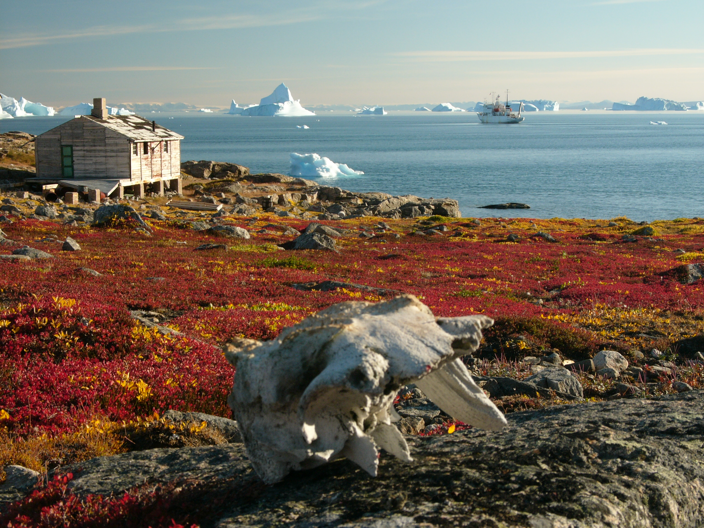
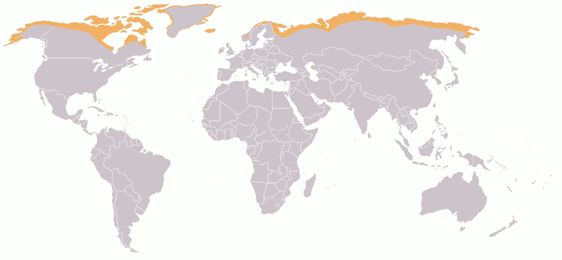
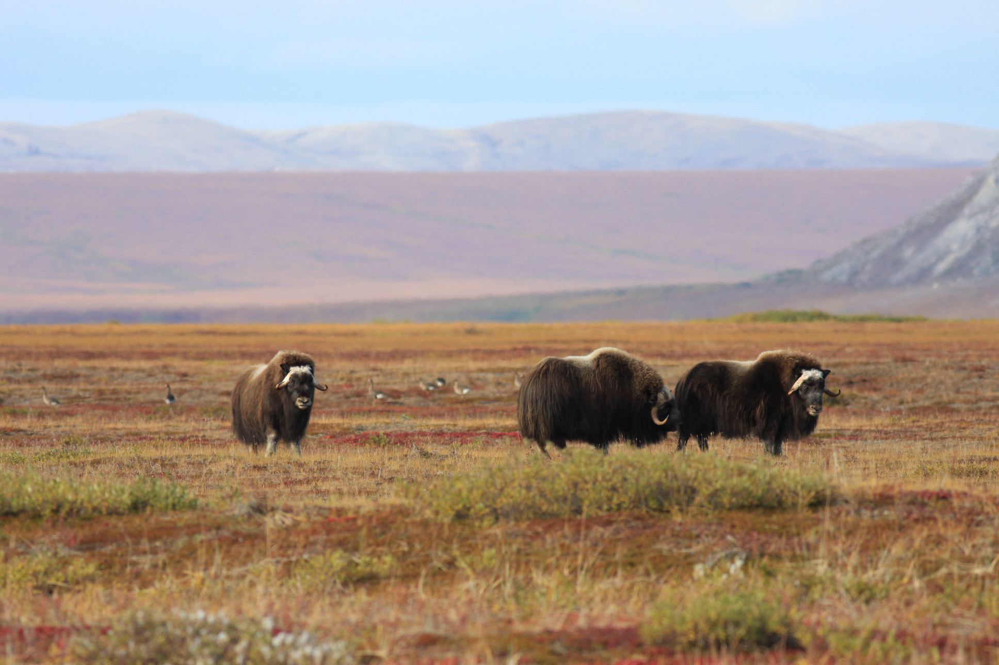

tundra
More information about tundras
In physical geography, tundra (/ˈtʌndrə, ˈtʊn-/) is a type of biome where tree growth is hindered by frigid temperatures and short growing seasons. The term tundra comes through Russian тундра (tundra) from the Kildin Sámi word тӯндар (tūndâr) meaning "uplands", "treeless mountain tract".[2] There are three regions and associated types of tundra: Arctic tundra,[3] alpine tundra,[3] and Antarctic tundra.[4]
Tundra vegetation is composed of dwarf shrubs, sedges, grasses, mosses, and lichens. Scattered trees grow in some tundra regions. The ecotone (or ecological boundary region) between the tundra and the forest is known as the tree line or timberline. The tundra soil is rich in nitrogen and phosphorus.[3] The soil also contains large amounts of biomass and decomposed biomass that has been stored as methane and carbon dioxide in the permafrost, making the tundra soil a carbon sink. As global warming heats the ecosystem and causes soil thawing, the permafrost carbon cycle accelerates and releases much of these soil-contained greenhouse gases into the atmosphere, creating a feedback cycle that increases climate change.


Arctic tundra occurs in the far Northern Hemisphere, north of the taiga belt. The word "tundra" usually refers only to the areas where the subsoil is permafrost, or permanently frozen soil. (It may also refer to the treeless plain in general so that northern Sápmi would be included.) Permafrost tundra includes vast areas of northern Russia and Canada.[3] The polar tundra is home to several peoples who are mostly nomadic reindeer herders, such as the Nganasan and Nenets in the permafrost area (and the Sami in Sápmi).
